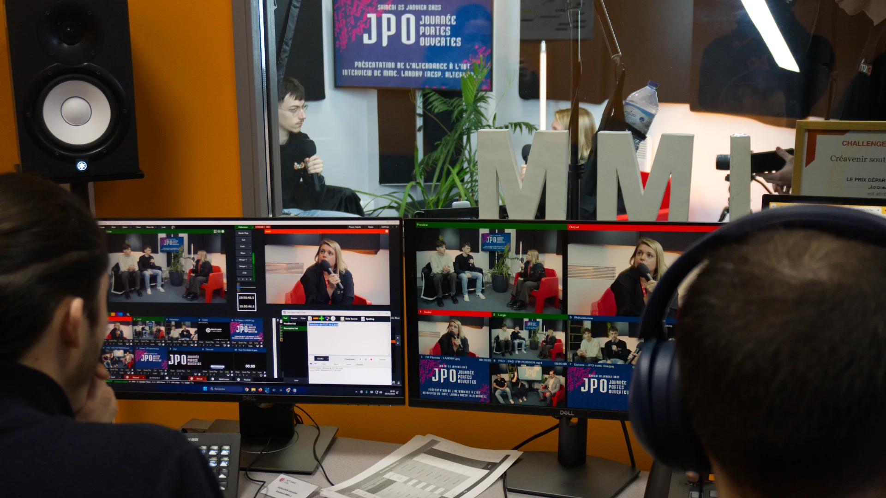

JPO Virtuelle
Ouvrir les portes du campus
à ceux qui ne peuvent pas venir.
6 heures
de direct.
Depuis 2022, Le Studio retransmet les portes ouvertes de l'IUT de Laval en direct sur Twitch. L'idée est née pendant le Covid et a perduré : permettre à ceux qui ne peuvent pas se déplacer de découvrir le campus, les formations et les enseignants comme s'ils y étaient.
Le format est ambitieux : six heures de live continu avec des visites de bâtiments, des interviews d'enseignants et d'étudiants, des présentations de formations. Chaque minute est planifiée pour garder un direct fluide et engageant sur toute la durée.
Mon rôle
- Coordination des plannings
- Production live
- Régie technique
Outils
- ATEM Mini / Blackmagic
- OBS Studio
- Twitch
Livrables
- Live de 6h sur Twitch
- Planning de diffusion
- Coordination animateurs & intervenants
Planifier chaque
minute.
Un live de six heures ne s'improvise pas. Il faut coordonner les plannings de diffusion, synchroniser les animateurs, caler les créneaux des intervenants — enseignants et étudiants — et anticiper les transitions entre chaque séquence. Mon rôle était de m'assurer que le fil rouge reste cohérent du début à la fin.


Réagir
en temps réel.
Le jour J, c'est la régie qui prend le relais. Gestion des sources vidéo via l'écosystème Blackmagic, diffusion sur Twitch, coordination avec les animateurs en direct. Malgré la préparation, le live impose de s'adapter en permanence : un intervenant en retard, un problème technique, un changement de dernière minute. C'est ce qui rend le format aussi exigeant et formateur.